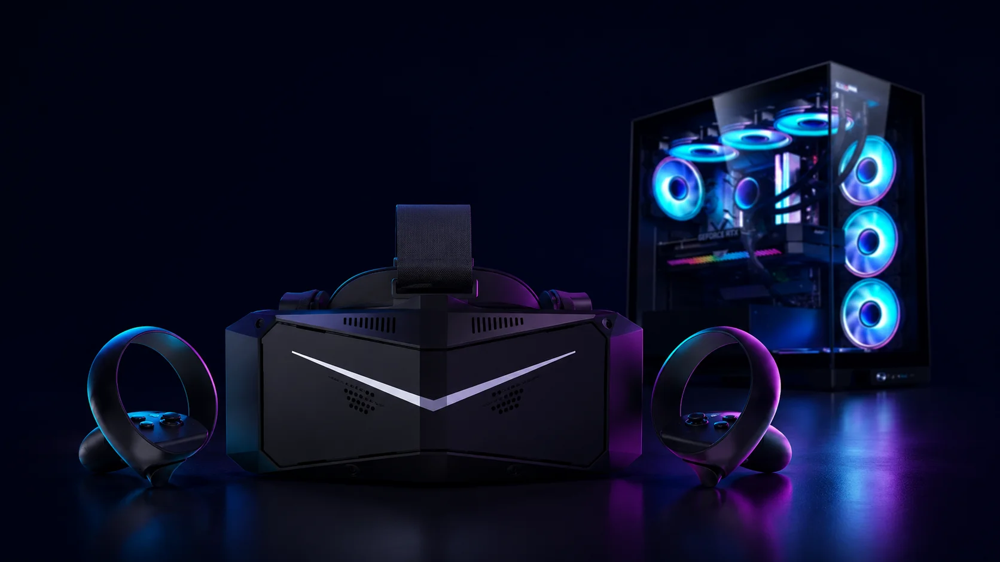

What you actually need for PCVR

PCVR — running VR games off a gaming PC instead of a standalone headset — is the deep end of the hobby. It has the highest ceiling: the best-looking games, the biggest modding scene, sim racing and flight sims that simply don't exist on a standalone headset. It's also the most expensive and the most fiddly. Here's what you actually need, and — just as useful — what you can skip when you're starting out.
It comes down to three things: a PC that can handle it, a headset that can do PCVR, and a way to connect the two.
Start with the PC, because it's the part that costs money and the part people get wrong. The graphics card is the bottleneck — VR means rendering two near-4K images at 90 frames per second or more, which punishes a weak GPU faster than any flat game. You don't need a $2,000 monster, though. A current mid-range card — think an RTX 5070 or Radeon RX 9070, or a still-capable previous-gen 4070 — runs the vast majority of PCVR comfortably. 16GB of video memory is the sensible 2026 baseline; you only need 24GB or more for ultra-high-resolution headsets or heavily modded sims. A modern Ryzen 5 or Core i5 keeps up, and you'll want 16GB of system RAM (32GB if you can), an SSD, and a power supply with some headroom. One honest caveat: the 2026 memory shortage has pushed RAM and GPU prices up across the board, so a build costs more right now than it did a year ago.
Now the headset — and here's the money-saving part. You almost certainly don't need a dedicated PCVR headset to start. The cheapest sane way in is a Meta Quest 3 or 3S: it works as a standalone headset and plugs into your PC for the full SteamVR library (our Quest 3 vs Quest 3S guide breaks down which one fits). A PSVR2 can also connect to a PC with Sony's adapter, though it loses its best features doing so — we cover that in our best VR for PS5 guide. Dedicated PCVR headsets — the now-discontinued Valve Index, the tiny OLED Bigscreen Beyond, the high-resolution Pimax models — need external base stations and a DisplayPort, and they're really for people who've already outgrown a Quest. Worth watching: Valve's new Steam Frame, a wireless-first PCVR headset, was announced but isn't out yet, with pricing expected at the end of June 2026. It's one to keep an eye on, not to wait on.
Last, the connection. With a Quest you have two options: a cable (Quest Link over USB-C, the most stable) or wireless (Air Link, or the popular Virtual Desktop app). Wireless is liberating but demands a strong network — ideally a Wi-Fi 6 or 6E router with your PC wired directly into it, not leaning on the whole house's signal. Native headsets like the Index or Pimax connect by DisplayPort straight to the graphics card instead. Either way, SteamVR is the software that actually runs your games.
So, the honest takeaway. PCVR gives you the best and most flexible VR experience there is, but it's the most demanding path on both your wallet and your patience. For almost everyone starting out, the smart move is the same: a Quest 3 or 3S plus a gaming PC you already own — or a sensible mid-range one — and a cable. Don't buy a dedicated rig with base stations until you actually know you want it. Not sure whether to start with a Quest, a PS5, or a PC? Our quiz points you to the right headset for how you'll actually use it.
Where to buy
Answer 7 quick questions and get a personalized match in 60 seconds.
Take the VR Finder quiz →This guide contains affiliate links. If you buy through them we may earn a commission at no extra cost to you, which helps keep vr.ar free. As an Amazon Associate, vr.ar earns from qualifying purchases. Prices and specifications are subject to change. See our Privacy Policy.